Um tema que antes nem aparecia em prova hoje é cobrado por inteiro. O que mudou não foi o pâncreas — foi a quantidade de imagens. Cada TC pedida "só pra dar uma olhada" multiplicou os cistos achados sem ninguém procurar.
A imagem em excesso e o cisto que ninguém procurou
A neoplasia cística do pâncreas é, hoje, uma entidade detectada cada vez mais por excesso de exames de imagem feitos sem indicação clínica precisa. Ela não nasceu agora; o que mudou foi a janela pela qual a enxergamos. O paciente que faz check-up por curiosidade, a TC pedida "só pra dar uma olhada", o ultrassom de tireoide solicitado em qualquer consulta — essa prática virou rotina, e não é correta.
Indicar um exame exige critério clínico definido. Não se sai pedindo imagem de qualquer forma. E é justamente desse hábito que nasce uma família inteira de achados: os incidentalomas. A neoplasia cística do pâncreas pertence ao mesmo grupo do incidentaloma de adrenal e do nódulo de tireoide — lesões que aparecem porque o exame foi pedido, não porque o paciente tinha queixa que as denunciasse.
O aumento maciço da TC elevou a captação dessas lesões. Um tema que antes era invisível passou a ser cobrado — e cobrado com peso onde há equipe forte de cirurgia hepatobiliopancreática.
Achados que a imagem em excesso revela. Três órgãos, um mesmo mecanismo: a lesão aparece porque o exame foi pedido sem queixa que a justificasse. Clique em cada órgão (mouse, toque ou teclado).
Esquema interativo
Toque num elemento desenhado para ver a leitura.
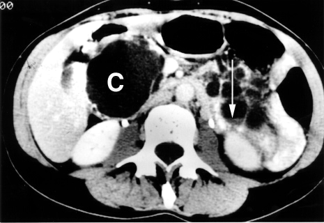
Achado: TC abdominal com volumosa lesão cística pancreática detectada em contexto de rastreio — cisto que aparece porque o exame foi pedido, não por queixa que o denunciasse.
TC. Cortesia NIH Clinical Center — lesões císticas pancreáticas (von Hippel-Lindau). Domínio público (PD-USGov). Ver fonte.
O que importa na prática
Bancas com equipe forte de cirurgia hepatobiliopancreática adoram cobrar neoplasia cística do pâncreas. Concursos de hospitais com esse perfil dão atenção especial ao tema — não é assunto de nicho, é assunto de banca específica que vale ouro.
Quiz — fixação
O que melhor explica o aumento recente da detecção de neoplasias císticas do pâncreas?
Gabarito: C. O pâncreas não mudou; a quantidade de TC mudou.
Por que cair na A: confundir "mais detectada" com "mais frequente" — são coisas diferentes.
Neoplasia cística do pâncreas pertence ao mesmo grupo de achados incidentais do incidentaloma de adrenal e do nódulo de tireoide.
Verdadeiro. Mesmo mecanismo: imagem em excesso revela a lesão sem queixa que a justifique.
Que perfil de banca tende a cobrar mais este tema?
Gabarito: B. É o perfil que domina o tema e gosta de cobrá-lo.
Página 2 / 14
Serosa · MucinosaIPMN · FrantzComponente cístico
Quatro nomes, um denominador: o componente cístico
Antes de tudo, fixe o essencial: neoplasia cística do pâncreas é um tumor. O nome traz "cística" porque o denominador comum de todas elas é a presença de componente cístico na imagem. Na TC, sempre há algum componente cístico — isolado ou misto. Esse componente pode estar puro (um cisto isolado) ou compor uma lesão sólida/heterogênea com porção cística associada.
Cada tipo tem perfil histológico próprio. Existem várias, mas quatro são as mais relevantes para prova: a neoplasia cística serosa, que produz soro; a neoplasia cística mucinosa, que produz mucina; o IPMN (neoplasia mucinosa intraductal papilífera), uma mucinosa que nasce nos ductos; e a neoplasia sólido-pseudopapilar (tumor de Frantz), de componente misto, sólido e cístico.
Duas observações já adiantam metade da lógica do tema. Primeira: o IPMN é, em essência, uma neoplasia cística mucinosa — só que nasce nos ductos pancreáticos, daí o "intraductal". Segunda: o tumor de Frantz tem componente misto — porção sólida, heterogênea, meio necrótica, junto de porção cística.
De onde nasce cada uma. Clique em cada lesão e no ducto: a origem é o que organiza todo o raciocínio do tema.
Esquema interativo
Toque num elemento desenhado para ver a leitura.
Regra de fixação
A melhor forma de dominar o tema é montar um tabelão com as quatro neoplasias lado a lado, cruzando cada uma com gênero, clínica, imagem, amilase, CEA, malignidade e conduta. Entendendo a origem de cada lesão, você deduz as colunas em vez de decorá-las.
Esqueleto do tabelão (preenchido ao longo das páginas)
Serosa
Mucinosa
IPMN
Frantz
Gênero
(p3)
(p3)
(p3)
(p3)
Clínica
(p4)
(p4)
(p7)
(p9)
Imagem
(p8)
(p8)
(p9)
(p9)
Amilase (líquido)
(p10)
(p10)
(p10)
(p10)
CEA (líquido)
(p10)
(p10)
(p10)
(p10)
Malignidade
(p11)
(p11)
(p11)
(p11)
Conduta
(p11)
(p11)
(p11)
(p11)
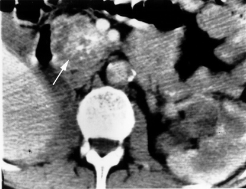
Achado: TC de cistoadenoma seroso — inúmeros microcistos somados em "massa" com calcificação central; um primeiro olhar nas assinaturas que serão dissecadas adiante.
TC. Cortesia NIH Clinical Center. Domínio público (PD-USGov). Ver fonte.
Quiz — fixação
O denominador comum de todas as neoplasias císticas do pâncreas, na imagem, é a presença de:
Gabarito: B. Por isso "cística": todas têm componente cístico na imagem.
Por que o IPMN tem "intraductal" no nome?
Gabarito: B. IPMN = mucinosa de origem ductal.
O tumor de Frantz é puramente cístico.
Falso. É misto: porção sólida (meio necrótica) + porção cística.
Página 3 / 14
GêneroPredomínio femininoIPMN escapa
Tumor benigno (tubo digestivo)
Mais comum em mulher.
×
Tumor maligno
Mais comum em homem.
As neoplasias císticas do pâncreas seguem a regra do benigno... menos uma: o IPMN.
Por que quase todas são mulheres — e por que o IPMN escapa
Há um padrão geral de cirurgia geral e tubo digestivo que vale como bússola: neoplasia maligna costuma ser mais comum em homem; tumores benignos são mais comuns em mulher. As neoplasias císticas do pâncreas e os tumores benignos do fígado caem no segundo grupo — predomínio feminino. (Ressalva: neoplasias ginecológicas fogem dessa lógica por razões óbvias.)
Aplicado ao grupo: todas as neoplasias císticas do pâncreas são mais comuns em mulheres — com uma exceção, o IPMN. O IPMN não tem predileção por sexo: é igualmente prevalente em homens e mulheres. Guarde a exceção, porque é exatamente ela que a banca cobra.
Por que esse predomínio feminino faz sentido? Porque, comparada ao adenocarcinoma ductal do pâncreas — o câncer agressivo e clássico —, a neoplasia cística é, em regra, a contraparte benigna. Ela é o lado "de bem" do espectro tumoral pancreático, e o lado de bem segue o padrão dos benignos.
Quem pende para o feminino — e quem fica no meio. Três pendem para a mulher; o IPMN é o fiel da balança. Clique em cada tipo.
Esquema interativo
Toque num elemento desenhado para ver a leitura.
Não confunda — onde a regra vale
Grupo das císticas
"Mais comum em mulher" vale para o grupo. A exceção é o IPMN (sem predileção por sexo).
Adenocarcinoma ductal
Não estenda a regra do benigno-feminino a ele — é o tumor maligno usual e segue o outro padrão.
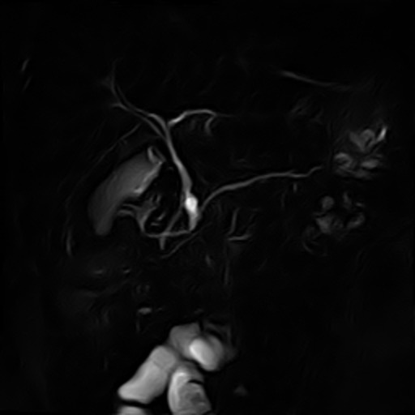
Achado: CPRM de IPMN de ducto secundário — a única do grupo sem predileção por sexo; a lesão mucinosa comunica-se com o sistema ductal.
MRCP/RM. Hellerhoff, Wikimedia Commons, CC BY-SA 3.0. Ver fonte.
Revisão ativa
Por que faz sentido que um grupo "de bem" siga o padrão dos tumores benignos?
Que perigo há em decorar "cística = mulher" sem lembrar da exceção?
Como você explicaria a um colega por que o IPMN escapa do padrão?
Quiz — fixação
Qual neoplasia cística do pâncreas NÃO tem predileção por sexo?
Gabarito: C. As outras três predominam em mulheres.
Por que cair na B: a mucinosa é justamente uma das de predomínio feminino — quem troca cai.
Como regra geral do tubo digestivo, tumor maligno é mais comum em homem e benigno em mulher.
Verdadeiro. É a bússola da página (ressalvadas as ginecológicas).
Comparada ao adenocarcinoma ductal, a neoplasia cística é, em regra, a contraparte:
Gabarito: B. É o lado "de bem" do espectro tumoral pancreático.
Página 4 / 14
Grupo mudoSintoma por compressãoSerosa = seroma
Caso clínico
Mulher, sente-se empachada depois de comer pouco, saciedade precoce há semanas. Exames de sangue normais. Uma TC mostra uma lesão cística volumosa no pâncreas empurrando o estômago. Ela nunca teve dor. Como uma lesão "de bem" causa sintoma?
O grupo é mudo: quando o cisto fala, é por compressão
Em geral, todas essas neoplasias são assintomáticas. Sintoma é raro. Esse é o comportamento esperado do grupo, e é o que explica por que tantas aparecem como achado incidental.
Quando há sintoma, ele é por efeito de massa: a lesão cresceu tanto que comprime estruturas vizinhas. O exemplo clássico é a compressão do estômago, que gera plenitude pós-prandial e saciedade precoce — exatamente o quadro da paciente da abertura. Não é invasão, não é dor de câncer; é uma massa grande ocupando espaço.
E quem mais cresce do grupo? A neoplasia cística serosa. Ela cresce muito — mas, atenção, cresce e é benigna. O crescimento dela é por acúmulo de líquido seroso, não por invasão de estruturas. Tamanho grande aqui não é sinônimo de agressividade.
Quando o tamanho gera sintoma. O sintoma não é invasão — é a massa ocupando o espaço do estômago. Clique na lesão e no estômago.
Esquema interativo
Toque num elemento desenhado para ver a leitura.
Analogia
Pelo próprio nome você deduz o conteúdo: a neoplasia cística serosa acumula soro — comporta-se como um seroma, aquele acúmulo de líquido que se forma após descolamento de subcutâneo em cirurgia. É líquido se juntando, crescendo, sem nada de maligno por trás. Serosa = seroma do pâncreas. Por isso é a mais benigna do grupo — a que menos preocupa.
Achado típico
Lesão cística volumosa + paciente com saciedade precoce/plenitude + ausência de sinais de agressividade → pense em serosa crescendo por acúmulo de soro. Tamanho impressiona; comportamento tranquiliza.
Achado: volumoso cisto pancreático que cursou com saciedade precoce por efeito de massa — cresce ocupando espaço, sem invasão.
TC. Cortesia NIH Clinical Center. Domínio público (PD-USGov). Ver fonte.
Quiz — fixação
Quando uma neoplasia cística do pâncreas dá sintoma, o mecanismo mais típico é:
Gabarito: B. O grupo é, em regra, assintomático; o sintoma surge por compressão.
Qual cresce mais e, ainda assim, é a mais benigna?
Gabarito: C. Cresce por acúmulo de soro (analogia do seroma).
Por que cair na A: associar "grande" a "agressiva" e errar — tamanho aqui não é agressividade.
A serosa cresce por invasão de estruturas vizinhas.
Falso. Cresce por acúmulo de líquido seroso — benigna.
Página 5 / 14
MucinosaMais comumMais preocupa
O reflexo que a banca explora
A mais comum do grupo deve ser a mais inofensiva — a serosa.
É o contrário. A mais comum é a mucinosa, e a mucinosa é justamente a que mais preocupa. O padrão intuitivo se inverte aqui.
A mais comum é também a que mais preocupa
Se a serosa é a mocinha, a mucinosa é a que mais preocupa: a neoplasia cística mucinosa é maligna (ou tem o maior potencial de malignização do grupo). E há um segundo golpe contra a intuição: além de ser a que mais preocupa, ela é a mais comum de todas. Isso quebra o raciocínio automático de "a mais benigna deve ser a mais frequente". Não é. A mais frequente é a perigosa.
Aqui mora uma das pegadinhas mais clássicas do tema. Existe questão antiga afirmando que a serosa seria a mais comum, e há referência (UpToDate) sugerindo que a serosa poderia ser a mais comum. Como resolver? Pela tradição da bibliografia cirúrgica: Sabiston, o tratado de cirurgia hepatobiliopancreática de Blumgart, e o Schwartz sustentam que a mucinosa é a mais comum. Essa é a resposta de prova. E a discordância isolada de outra fonte serve, inclusive, como fundamento para anulação de questão mal formulada.
Quando a mucinosa se maligniza, ela se manifesta como adenocarcinoma mucinoso de pâncreas (cistoadenocarcinoma mucinoso). Repare no contraste fino: o adenocarcinoma de pâncreas usual é ductal; já a mucinosa, ao se malignizar, vira um adenocarcinoma de perfil mucinoso — não o ductal clássico.
Frequência × preocupação. A mais comum não é a mais inofensiva — é a mucinosa, no canto perigoso. Clique em cada tipo no plano.
Esquema interativo
Toque num elemento desenhado para ver a leitura.
O que a banca quer
Marque mucinosa = mais comum (canon cirúrgico) e mucinosa = a que mais preocupa. Se o enunciado tentar empurrar "serosa é a mais comum" citando fonte isolada, é candidato a anulação — e saber disso é nível avançado.
Não confunda — duas malignizações
Adenocarcinoma ductal
O câncer de pâncreas usual, agressivo, de origem ductal.
Adenocarcinoma mucinoso
No que a mucinosa se transforma ao malignizar — origem e perfil diferentes.
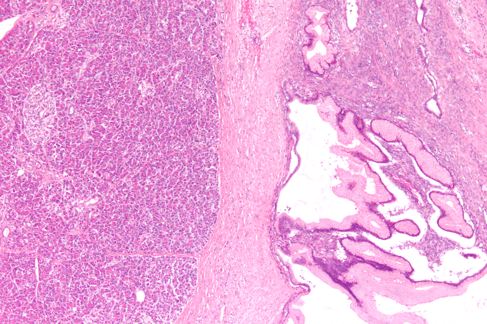
Achado: neoplasia cística mucinosa do pâncreas — parede com epitélio mucinoso e estroma tipo ovariano (H&E). É a mais comum e, ao malignizar, vira adenocarcinoma mucinoso.
Histologia. Nephron, Wikimedia Commons, CC BY-SA 3.0. Ver fonte.
Quiz — fixação
Para prova BR (canon Sabiston/Blumgart/Schwartz), a neoplasia cística mais comum é:
Gabarito: B. Tradição cirúrgica.
Por que cair na A: fonte isolada (UpToDate/questão antiga) sugere serosa — é o que fundamenta anulação, não a resposta.
A mucinosa é, ao mesmo tempo, a mais comum e a que mais preocupa.
Verdadeiro. Quebra a intuição "mais benigna = mais comum".
Ao se malignizar, a mucinosa vira:
Gabarito: B. O ductal é o câncer de pâncreas usual, de outra origem.
Página 6 / 14
Onde nasceO que produzEixo organizador
?
Se a mucinosa e o IPMN são as duas mucinosas, o que separa uma da outra? A resposta não está no que elas produzem — está em onde nascem e se conversam com os ductos.
De onde nasce e o que produz: o eixo que organiza tudo
Este é o eixo que organiza todo o tema: origem da lesão + comunicação com os ductos. Domine-o aqui e as colunas do tabelão (amilase, CEA, conduta) caem por dedução.
Comece pelo IPMN. O IPMN é neoplasia cística mucinosa, mas não nasce do parênquima — nasce dos ductos pancreáticos (intraductal). A sigla, decodificada do inglês, entrega tudo: I = intraductal, P = papilífero, M = mucinoso, N = neoplasia. Em português existe o sinônimo NIMP, mas o termo de uso preferencial é IPMN.
Agora o que cada uma produz. A neoplasia cística mucinosa produz muco/mucina — assim como a serosa produz soro. Uma boa âncora: a mucinosa é como aquele cisto sebáceo que cresce na pele/dorso produzindo conteúdo espesso — só que dentro do pâncreas, produzindo mucina.
E aqui está a diferença-chave entre as duas mucinosas: a neoplasia cística mucinosa NÃO se comunica com os ductos principais do pâncreas; o IPMN TEM comunicação ductal. É isso, e só isso, que separa as duas. Quando o IPMN se comunica com o ducto, a mucina espessa que ele produz cai dentro dos ductos pancreáticos. E uma mucina espessa caindo num ducto fino pode obstruí-lo — e obstrução ductal causa pancreatite. Guarde esse encadeamento: ele é a próxima página inteira.
O divisor de águas das mucinosas. A mucina é a mesma; o que muda é por onde ela escoa. Clique na mucinosa, no IPMN e no ducto.
Esquema interativo
Toque num elemento desenhado para ver a leitura.
Mnemônico
I-P-M-N = Intraductal, Papilífero, Mucinoso, Neoplasia. Quem nasce no ducto comunica com o ducto.
Por que importa
A comunicação ductal não é detalhe acadêmico: é o que vai explicar a amilase alta do IPMN, a dilatação ductal na imagem e a pancreatite como apresentação. Um conceito, três consequências.
Achado: CPRM evidenciando a comunicação ductal do IPMN — a mucina espessa escoa pelo ducto, base da pancreatite e da amilase alta no líquido.
MRCP/RM. Hellerhoff, Wikimedia Commons, CC BY-SA 3.0. Ver fonte.
Revisão ativa
Por que a comunicação ductal é o único traço que separa mucinosa de IPMN?
Como a origem (parênquima vs ducto) prevê o que será dosado no líquido?
Que três consequências derivam de "o IPMN comunica com o ducto"?
Quiz — fixação
O único traço que separa neoplasia cística mucinosa de IPMN é:
Gabarito: B. Mucinosa não comunica; IPMN comunica.
A sigla IPMN significa: ______, papilífero, mucinoso, neoplasia.
Gabarito: A. Intraductal — nasce no ducto.
A mucina espessa do IPMN, ao cair no ducto fino, pode obstruí-lo e causar pancreatite.
Verdadeiro. Encadeamento central do tema.
Página 7 / 14
Pancreatite sem causaArmadilha do cálculoIPMN intraductal
Pancreatite sem causa: a armadilha do cálculo
O IPMN pode, sim, ser causa de pancreatite — é uma apresentação possível, porém incomum. O mecanismo você já conhece: a mucina espessa obstrui o ducto. Existe inclusive uma forma de apresentação elegante: paciente com pancreatite cuja investigação habitual vem negativa — ultrassom sem achado, sem etilismo, triglicerídeos normais, sem droga — e a TC acaba revelando uma neoplasia cística intraductal mucinosa como a causa. Nesse cenário "limpo", o IPMN é o réu plausível.
A armadilha aparece quando o cenário não é limpo. O caso paradigmático: paciente interna grave com colecistite/pancreatite aguda, o ultrassom mostra cálculo, faz colecistectomia, segue mal, e uma TC posterior revela um IPMN. Fica a dúvida: quem causou a pancreatite?
A régua prática: nesse cenário com cálculo presente, cerca de 9,5 a cada 10 casos a pancreatite é pelo cálculo, não pelo IPMN. (Essa proporção é uma régua didática para fixar a aposta etiológica — não um número de diretriz.) Em outras palavras: não é comum o paciente com IPMN desenvolver pancreatite; havendo cálculo, a aposta etiológica é o cálculo. O IPMN que aparece na TC é, na maioria das vezes, um espectador — um achado, não o culpado.
Cálculo presente: a aposta é o cálculo. O IPMN chama atenção, mas o cálculo é o culpado mais provável. Clique no cálculo e no IPMN.
Esquema interativo
Toque num elemento desenhado para ver a leitura.
Pegadinha de prova
Enunciado com pancreatite + cálculo no ultrassom + IPMN na TC quer testar se você atribui a causa ao achado mais "chamativo" (o IPMN) ou ao mais provável (o cálculo). Havendo cálculo, a resposta é o cálculo. O IPMN só vira o réu quando o cenário está limpo de cálculo, etilismo e triglicerídeo.
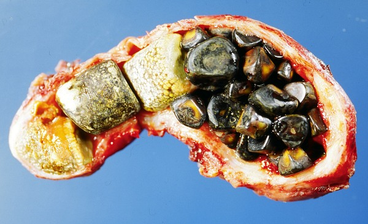
Achado: cálculos biliares — quando coexistem com IPMN na imagem, a aposta etiológica da pancreatite recai sobre o cálculo (~9,5/10), não sobre o IPMN.
Foto macroscópica. Wikimedia Commons, CC BY-SA 3.0. Ver fonte.
Quiz — fixação
Pancreatite aguda + cálculo no ultrassom + IPMN na TC. Aposta etiológica?
Gabarito: B. Havendo cálculo, ~9,5/10 é o cálculo.
Por que cair na A: o IPMN é o achado mais chamativo, mas raramente o culpado.
IPMN nunca causa pancreatite.
Falso. Pode causar — é apenas incomum.
Em que cenário o IPMN vira o réu mais plausível da pancreatite?
Gabarito: B. No cenário limpo, o IPMN sobe como causa.
Página 8 / 14
TCSepto fino × grosseiroPadrão de imagem
TC parte 1: septo fino × septo grosseiro
A imagem típica na TC é cada vez mais cobrada — bancas de São Paulo gostam — e a associação visual por neoplasia é o atalho para nunca mais esquecer. Esta página fecha duas das quatro: serosa e mucinosa.
A neoplasia cística serosa costuma ser grande e tem aspecto de favo de mel — formada por microcistos. Atenção ao detalhe que cai em prova: ela não é um único cisto grande cheio de soro; são múltiplos microcistos que, somados, compõem uma massa grande com padrão de favo de mel. Os septos da serosa são finos e delicados — e septo fino faz pensar em serosa. Na peça anatômica cortada, ela reproduz o mesmo aspecto de favo de mel.
A neoplasia cística mucinosa também tem septos — mas septos grosseiros, em contraste direto com os finos da serosa. Na peça, a mucinosa lembra um cisto sebáceo; é da cápsula/parede dela que vem a produção de muco. E o ponto que fecha o diferencial com o IPMN: a mucinosa não tem comunicação com os ductos principais — e é exatamente isso que a separará do IPMN na imagem.
O septo decide. Mesma silhueta multilocular; a espessura do septo separa a mocinha da perigosa. Clique em cada lesão.
Serosa não é um cisto único e grande de soro — é uma massa de microcistos (favo de mel). Confundir "grande" com "unilocular" leva ao diagnóstico errado.
Achado: TC de cistoadenoma seroso — microcistos somados em "massa" com calcificação central; septos finos e delicados, padrão favo-de-mel.
TC. Cortesia NIH Clinical Center. Domínio público (PD-USGov). Ver fonte.
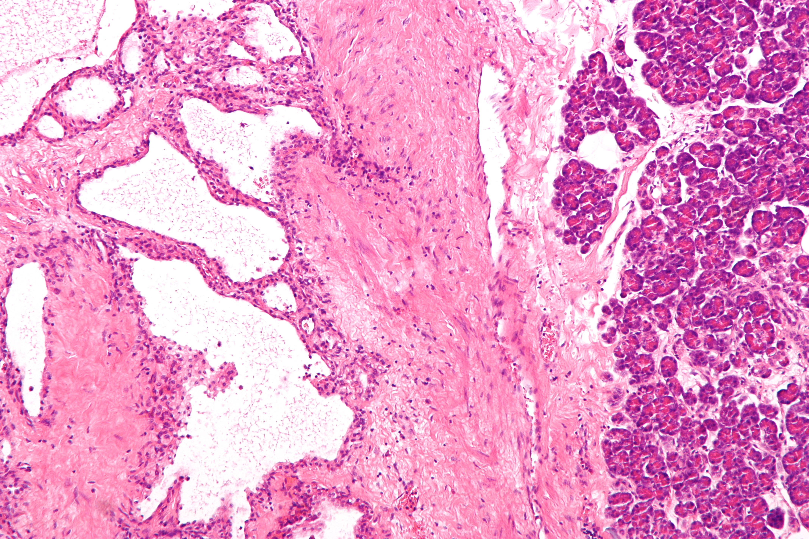
Achado: microcistos revestidos por epitélio cuboide — substrato histológico do padrão favo-de-mel da serosa, septos finos.
Histologia. Nephron, Wikimedia Commons, CC BY-SA 3.0. Ver fonte.
Quiz — fixação
Padrão favo de mel com microcistos e septos finos sugere:
Gabarito: B. Septo fino → serosa.
A serosa é tipicamente um cisto único e grande cheio de soro.
Falso. São múltiplos microcistos (favo de mel).
Septos grosseiros em lesão macrocística do corpo/cauda sugerem:
Gabarito: B. Septo grosseiro → mucinosa.
Por que cair na A: quem troca a espessura do septo erra o par inteiro.
Página 9 / 14
Ducto dilatadoMassa que necrosaFrantz com Z
IPMN
Dilatação do ducto pancreático associada — o divisor de águas na imagem.
×
Frantz
Massa heterogênea com áreas de necrose, sólido-cística.
Dois achados radiológicos opostos, dois diagnósticos fechados.
TC parte 2: o ducto dilatado e a massa que necrosa
Fechamos as quatro assinaturas. O IPMN na imagem traz seu marco registrado: dilatação do ducto pancreático associada. O aspecto é mucinoso, às vezes unilocular, às vezes septado, mas sempre com dilatação ductal. E é exatamente aqui que ele se separa da mucinosa: na mucinosa os ductos estão normais; no IPMN há dilatação ductal. Esse é o divisor de águas na TC.
Fixe a regra de ouro: neoplasia cística acompanhada de dilatação ductal = pensar imediatamente em IPMN. O IPMN ainda pode ser de ducto principal ou de ducto secundário. O de ducto principal é o "do mal"; o de ducto secundário é o "do bem" até que se prove o contrário — e essa distinção comanda o tratamento. Para a prova de acesso direto, de forma simplificada, IPMN a princípio é "do mal" e se opera — o detalhamento por tipo de ducto fica no conteúdo aprofundado.
A última é a neoplasia sólido-pseudopapilar — o tumor de Frantz. É um tumor heterogêneo, com componente sólido e componente cístico, de crescimento rápido. Por crescer rápido, na imagem vê-se áreas de necrose e, em uma região, porção mais cística — coexistindo a porção sólida já necrosada e a porção cística. É a única do grupo com essa cara mista e necrótica.
Os dois últimos achados. O ducto dilatado grita IPMN; a massa que necrosa grita Frantz. Clique no ducto, na necrose e na porção cística.
Esquema interativo
Toque num elemento desenhado para ver a leitura.
Mnemônico
Para a grafia do nome: Frantz — termina com Z. Tumor de Frantz, da patologista que o descreveu.
Achado típico
Cisto + dilatação ductal → IPMN (divisor de águas). Massa sólido-cística heterogênea com necrose, crescimento rápido, mulher jovem → Frantz.
Não confunda — o ducto decide
Mucinosa
Ductos normais.
IPMN
Ductos dilatados. O resto da imagem pode ser parecido; o ducto decide.
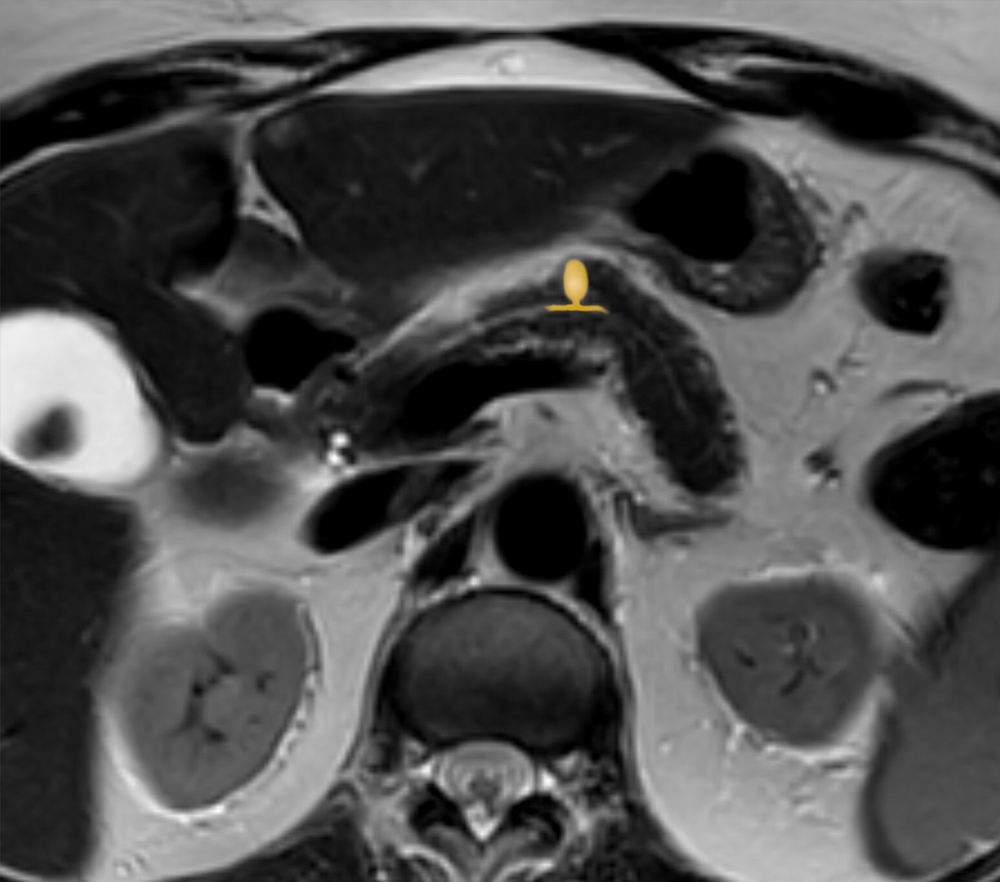
Achado: RM T2 axial de IPMN de ducto secundário (anotada) — lesão cística mucinosa com relação ao sistema ductal pancreático; a dilatação ductal é o divisor de águas com a mucinosa.
RM T2. Hellerhoff, Wikimedia Commons, CC BY-SA 4.0. Ver fonte.
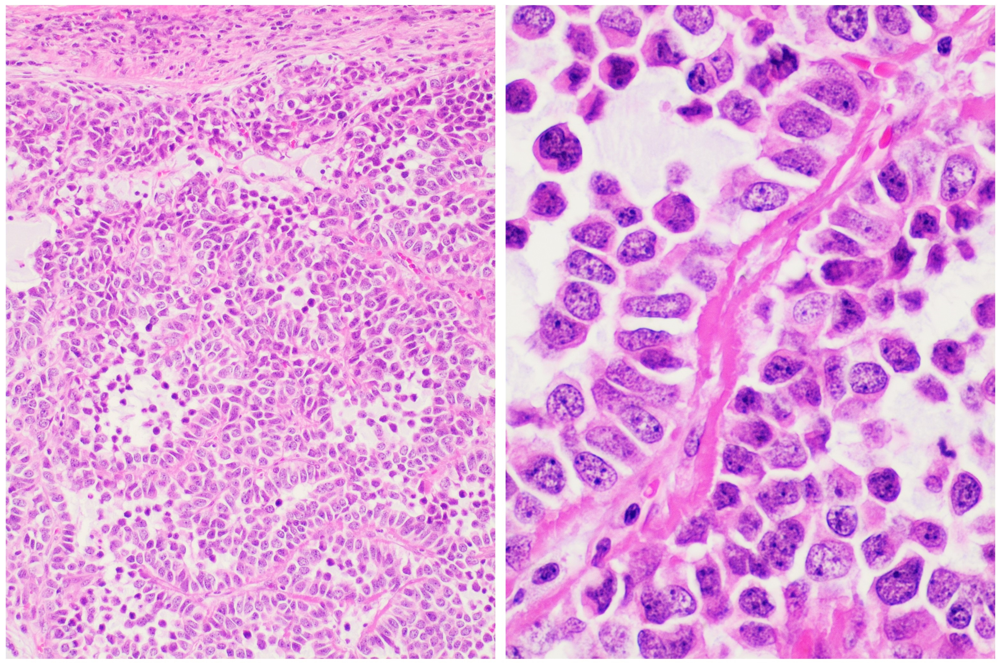
Achado: tumor sólido-pseudopapilar (Frantz) — lençóis sólidos de células focalmente discoesas com glóbulos hialinos eosinofílicos; a contraparte da massa sólido-cística necrótica vista na imagem.
Histologia. Nephron, Wikimedia Commons, CC BY-SA 3.0. Ver fonte.
Quiz — fixação
Neoplasia cística + dilatação do ducto pancreático na TC. Diagnóstico mais provável?
Gabarito: C. Dilatação ductal é o divisor de águas.
Por que cair na B: na mucinosa os ductos estão normais — quem não checa o ducto erra.
Massa heterogênea, sólido-cística, com áreas de necrose, em mulher jovem, crescimento rápido:
Gabarito: C. Assinatura clássica do tumor de Frantz.
O IPMN de ducto principal é considerado o "do mal".
Verdadeiro. Comanda conduta cirúrgica.
Página 10 / 14
Amilase × CEADeduzir pela origemNão decorar
?
Por que basta saber de onde a lesão nasce para prever o que vai aparecer no líquido aspirado? Amilase e CEA não se decoram — deduzem-se da origem.
Amilase e CEA: deduza, não decore
Volte ao eixo da origem: origem prevê líquido. A serosa nasce do parênquima e não comunica com ducto. A mucinosa nasce do parênquima, produz mucina e não comunica com ducto. O IPMN é mucinosa que nasce no ducto e tem comunicação ductal. Com isso na cabeça, deduza as duas dosagens.
Amilase. O parênquima pancreático produz enzimas — entre elas a amilase — que são despejadas nos ductos pancreáticos. Atenção a uma pegadinha clássica: a amilase relevante aqui é a do líquido da punção do cisto, não a amilase sanguínea. Não se dosa amilase sérica para isso; dosa-se a amilase do líquido aspirado do tumor. Agora a dedução: amilase alta no líquido significa, necessariamente, comunicação direta da lesão com os ductos (porque toda amilase é jogada no ducto). Logo, a única das quatro com amilase alta no líquido é o IPMN — a que comunica com o ducto. As demais têm amilase baixa ou normal.
CEA. As que produzem mucina são duas: a mucinosa e o IPMN. E o CEA é um marcador de mucina — o paralelo ajuda: o adenocarcinoma de cólon só tem CEA alto se for mucinoso. Portanto, as únicas com CEA alto no líquido são as que têm mucina associada: mucinosa e IPMN. As outras (serosa e Frantz), não.
Repare na elegância: você não decorou quatro valores de amilase e quatro de CEA. Você guardou duas regras de origem (comunica com ducto? produz mucina?) e deduziu as oito células.
A tabela que se deduz. Clique numa célula: ela explica de onde vem o valor, não só o número.
Esquema interativo
Toque num elemento desenhado para ver a leitura.
Pegadinha de prova
Amilase do líquido, não amilase sérica. Questão que oferece "amilase sérica elevada" como pista de IPMN está testando se você sabe que a dosagem é no líquido aspirado.
Amilase e CEA, deduzidos da origem
Serosa
Mucinosa
IPMN
Frantz
Comunica com ducto?
Não
Não
Sim
Não
Produz mucina?
Não
Sim
Sim
Não
Amilase (líquido)
Baixa
Baixa
Alta
Baixa
CEA (líquido)
Baixo
Alto
Alto
Baixo
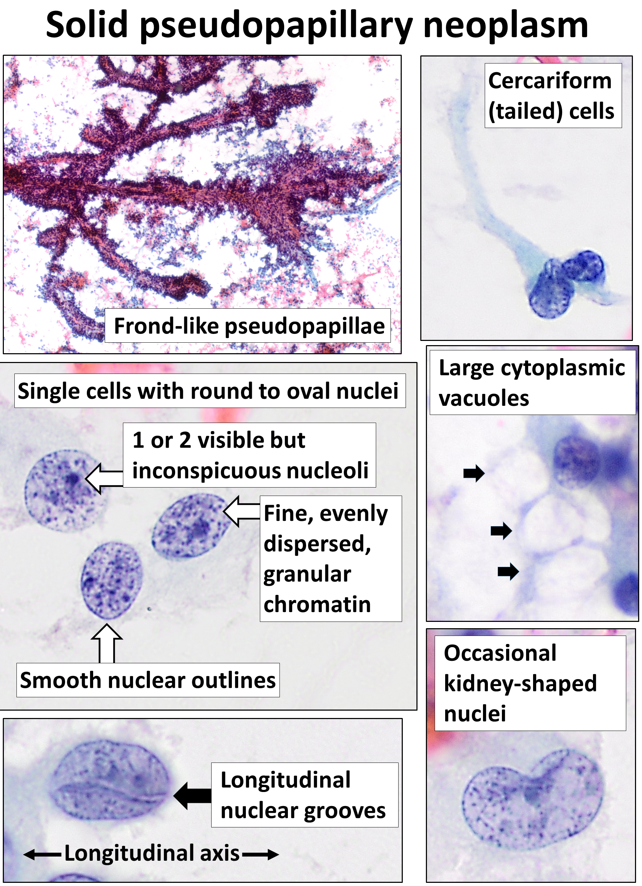
Achado: citologia obtida por ecoendoscopia + PAAF — material aspirado de cisto pancreático, do qual se dosam amilase e CEA do líquido (não a amilase sérica).
Citologia EUS-FNA. Mikael Häggström, M.D., Wikimedia Commons, CC0 1.0 (domínio público). Ver fonte.
Revisão ativa
Por que amilase alta no líquido aponta obrigatoriamente para comunicação ductal?
Por que o CEA "denuncia" mucina, e quais duas lesões isso seleciona?
Como você reconstruiria a tabela inteira sabendo só a origem de cada lesão?
Quiz — fixação
Qual das quatro tem amilase ALTA no líquido aspirado?
Gabarito: C. Amilase alta = comunicação ductal = IPMN.
CEA alto no líquido aparece em:
Gabarito: B. CEA marca mucina; as duas mucinosas.
Por que cair na D: serosa e Frantz não produzem mucina.
Para esse diagnóstico, dosa-se amilase sérica.
Falso. Dosa-se a amilase do líquido aspirado do cisto.
Página 11 / 14
Quem operaQuem observaComo se opera
Ao final desta página você vai saber:
Qual é a única benigna do grupo — e a única tratada de forma conservadora
Por que todas as outras se operam
Por que o IPMN é o "meio-termo" da malignidade
Qual cirurgia para corpo/cauda e qual para a cabeça
Quem opera, quem observa, e como se opera
Hora de deduzir a coluna que decide tudo: malignidade e conduta. A única benigna do grupo é a serosa; todas as outras têm risco de malignidade aumentado. Por isso a serosa, por ter o menor risco, é a única tratada de forma conservadora — observa-se. Todas as outras se operam.
O IPMN é o "meio-termo" da malignidade. De ducto secundário, o risco é menor — não se opera de imediato (entra em vigilância). De ducto principal, sem discussão: opera-se e trata-se como doença maligna.
Quando a indicação é cirúrgica, a escolha da operação é por localização da lesão: lesão em corpo/cauda → pancreatectomia corpo-caudal com esplenectomia; lesão na cabeça do pâncreas → cirurgia de Whipple (duodenopancreatectomia).
Tudo deduzido, lado a lado. A coluna conduta cai sozinha da coluna malignidade. Clique nas células de conduta e de cirurgia por sítio.
Esquema interativo
Toque num elemento desenhado para ver a leitura.
Resumo operacional
Serosa observa; todas as outras operam (com o IPMN de ducto secundário como a exceção que entra em vigilância antes de decidir). A localização escolhe qual cirurgia, não se opera.
O tabelão fechado
Serosa
Mucinosa
IPMN
Frantz
Gênero
Mulher
Mulher
Sem predileção
Mulher (jovem)
Imagem
Favo de mel, septo fino
Macrocística, septo grosseiro
Dilatação ductal
Sólido-cístico, necrose
Amilase (líquido)
Baixa
Baixa
Alta
Baixa
CEA (líquido)
Baixo
Alto
Alto
Baixo
Malignidade
Benigna
Maligna/maior risco
Meio-termo
Maior risco
Conduta
Conserva
Opera
Secundário vigia · Principal opera
Opera
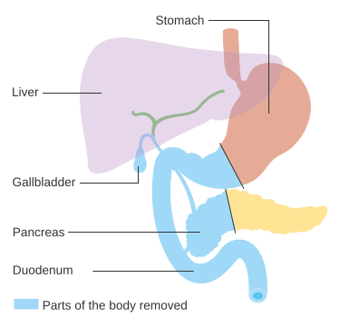
Achado: estruturas removidas na duodenopancreatectomia (Whipple) — cabeça do pâncreas, duodeno, parte do estômago, colédoco e vesícula. Conduta para lesão da cabeça.
Esquema. Cancer Research UK, Wikimedia Commons, CC BY-SA 4.0. Ver fonte.
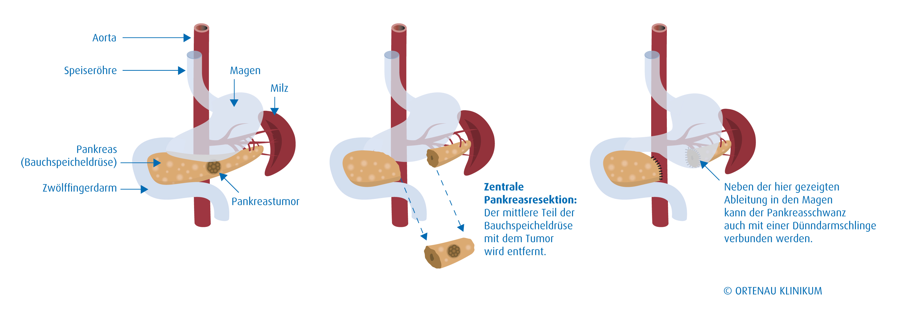
Achado: esquema de pancreatectomia parcial distal — ressecção de corpo/cauda (associada à esplenectomia na conduta). Conduta para lesão de corpo/cauda.
Esquema. Ortenau Klinikum, Wikimedia Commons, CC BY-SA 3.0 DE. Ver fonte.
Quiz — fixação
Qual é a única tratada de forma conservadora?
Gabarito: B. Menor risco de malignidade → observa.
Lesão cística maligna na cabeça do pâncreas. Cirurgia?
Gabarito: B. Cabeça → Whipple.
Por que cair na A: corpo-caudal é para lesão de corpo/cauda, não da cabeça.
IPMN de ducto principal pode ser apenas observado.
Falso. Principal opera, sem discussão.
Página 12 / 14
IPMN secundárioSinais de alarmeWorrisome features
Manejo aprofundado · vida real
Um IPMN de ducto secundário em vigilância há um ano. Na TC de controle, surge um nódulo mural pequeno. Era "do bem até prova em contrário" — e agora? Esse achado é alarme ou sentença? A página decide.
IPMN secundário: os sinais de alarme
Nota de escopo
O conteúdo desta página e das duas seguintes é manejo aprofundado do IPMN, voltado à prática e à vida real — não cobrado em prova de acesso direto. Vale como diferencial de quem domina o tema a fundo.
O IPMN de ducto principal já está resolvido: sem discussão, indica-se cirurgia. O problema interessante é o de ducto secundário, o "do bem até que se prove o contrário". Nele, avalia-se a probabilidade de malignidade por dois grupos de critérios: os sinais de alarme e os estigmas de alto risco.
A hierarquia entre eles importa. Os de risco mais alto são os estigmas de alto risco: qualquer estigma equivale a câncer (ou alto risco de câncer) e indica cirurgia direto. Os sinais de alarme indicam apenas suspeita: a lesão talvez seja câncer e precisa ser estudada melhor — e a conduta diante deles é puncionar. E aqui um princípio: não se punciona toda neoplasia cística. Na maioria, basta a TC; punciona-se (PAAF guiada por ecoendoscopia) só quem tem sinais de alarme.
Onde mora cada sinal de alarme. Clique no achado desenhado: a anatomia diz se é alarme e o que fazer.
Esquema interativo
Toque num elemento desenhado para ver a leitura.
Nomenclatura
Em inglês, cobrado em prova — sinais de alarme = "worrisome features"; estigmas de alto risco = "high-risk stigmata".
Sinais de alarme (worrisome features)
Ducto principal levemente dilatado (acima de 5 mm e menor que 1 cm — o secundário já pode estar acometendo o principal) · nódulo mural pequeno · cisto grande (a partir de 3 cm) · espessamento de parede do cisto (incomum) · crescimento da lesão nos últimos 2 anos (acompanhamento por TC anual ou bianual, em geral anual) · mudança de calibre ductal ou atrofia de corpo e cauda · linfonodomegalia associada na TC · pancreatite comprovadamente relacionada à neoplasia (cenário raro: só conta quando não há cálculo, etilismo nem triglicerídeo alto) · CA 19-9 elevado (marcador tumoral do câncer de pâncreas) — obriga investigação.
Regra de conduta
Diante de qualquer sinal de alarme (basta um): punção guiada por ecoendoscopia. Se vier malignidade — mucina alta ou citologia oncótica positiva para células neoplásicas — opera-se.
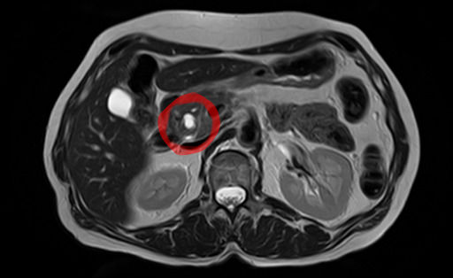
Achado: RM T2 de IPMN de ducto secundário — lesão cística que entra em vigilância; é nela que se procuram os sinais de alarme antes de decidir puncionar.
RM T2. Hellerhoff, Wikimedia Commons, CC BY-SA 3.0. Ver fonte.
Achado: material citológico obtido por EUS-FNA de lesão cística pancreática — o que se colhe quando o sinal de alarme manda puncionar.
Citologia EUS-FNA. Mikael Häggström, M.D., Wikimedia Commons, CC0 1.0 (domínio público). Ver fonte.
Revisão ativa
Por que sinais de alarme levam a puncionar, e estigmas de alto risco levam direto a operar?
Por que não se punciona toda neoplasia cística?
Como um ducto principal levemente dilatado denuncia um IPMN que "começou" no secundário?
Quiz — fixação
Conduta diante de um sinal de alarme (worrisome feature) em IPMN de ducto secundário:
Gabarito: B. Alarme = suspeita = puncionar.
Por que cair na A: operar direto é a resposta para estigma de alto risco, não para sinal de alarme.
Toda neoplasia cística deve ser puncionada.
Falso. Na maioria basta a TC; punciona-se quem tem sinal de alarme.
Em inglês, sinais de alarme = ______ features.
Gabarito: B. Worrisome features = sinais de alarme; high-risk stigmata = estigmas de alto risco.
Página 13 / 14
Estigmas de alto riscoHigh-risk stigmataDireto à cirurgia
?
O que faz um achado pular a etapa da punção e mandar o paciente direto para a cirurgia? São os estigmas de alto risco — e basta um.
IPMN: estigmas de alto risco e a árvore de decisão
Se os sinais de alarme indicam suspeita e mandam puncionar, os estigmas de alto risco (high-risk stigmata) indicam câncer ou alto risco de câncer e mandam operar direto — sem passar pela punção. Em qualquer estigma de alto risco, indica-se cirurgia.
Os estigmas são três: ducto principal dilatado acima de 1 cm (acima de 1 cm já é estigma; quanto maior, pior) · nódulo mural de 0,5 cm (meio centímetro) ou mais · sinal obstrutivo: icterícia com IPMN na cabeça do pâncreas (massa obstruindo a via biliar).
Repare na progressão em relação aos sinais de alarme: o ducto que era alarme entre 5 mm e 1 cm vira estigma acima de 1 cm; o nódulo mural que era alarme quando pequeno vira estigma a partir de 0,5 cm. O mesmo achado, crescendo, sobe de categoria — de "puncionar" para "operar".
Do diagnóstico à conduta, em uma árvore. Cada caixa é uma decisão; clique para ver o critério de cada ramo.
Esquema interativo
Toque num elemento desenhado para ver a leitura.
A árvore inteira do IPMN
IPMN de ducto principal → opera. Secundário com estigma de alto risco → opera direto. Sem estigma, com sinal de alarme → PAAF por ecoendoscopia (positiva opera; negativa segue vigilância). Sem alarme → seguimento por tamanho.
Resumo operacional
Estigma de alto risco = cirurgia direto. Sinal de alarme = punção. Nada = vigilância por tamanho.
Achado: RM T2 axial de IPMN (anotada) — é o calibre do ducto principal que separa o alarme (5 mm–<1 cm) do estigma de alto risco (>1 cm).
RM T2. Hellerhoff, Wikimedia Commons, CC BY-SA 4.0. Ver fonte.
Quiz — fixação
Qual achado indica cirurgia DIRETO, sem passar por punção?
Gabarito: B. Ducto >1 cm é estigma de alto risco.
Por que cair na A: cisto ≥3 cm é alarme (punção), e 2,5 cm nem chega lá.
Nódulo mural a partir de que tamanho vira estigma de alto risco?
Gabarito: B. A partir de 0,5 cm → operar.
Icterícia por IPMN na cabeça do pâncreas é estigma de alto risco.
Verdadeiro. Sinal obstrutivo → cirurgia.
Página 14 / 14
Seguir pelo tamanhoRelógio do cistoVigilância
Ao final desta página você vai saber:
Como o intervalo de seguimento muda com o tamanho da lesão
Por que cisto a partir de 3 cm já entra como sinal de alarme
Como a idade modula a conduta no corte de 3 cm
Seguir pelo tamanho: o relógio do cisto
Nota de escopo
Este é um esquema simplificado de seguimento, organizado para fixação. Na vida real, o intervalo é individualizado.
Quando o IPMN de ducto secundário não tem estigma nem sinal de alarme, ele entra em vigilância — e o intervalo de seguimento é guiado pelo tamanho da lesão. Quanto maior o cisto, mais curto o intervalo inicial, porque maior a chance de evoluir.
Lesão < 1 cm: TC (com contraste) a cada 6 meses e, depois, a cada 2 anos; pode-se usar ecoendoscopia. Lesão de 1 a 2 cm: 6 meses, depois 1 ano, depois a cada 2 anos. Lesão > 2 cm: 3 meses, depois 6 meses, depois anual, com ecoendoscopia.
Repare na lógica do relógio: lesões maiores começam com vigilância mais apertada (3 meses) e vão espaçando conforme se mostram estáveis; lesões pequenas já começam folgadas.
E há um ponto de virada: a lesão a partir de 3 cm entra como sinal de alarme. Aí, a conduta passa a depender da idade/risco do paciente: paciente jovem (bom risco cirúrgico) → equivale a cirurgia; paciente idoso → faz-se PAAF para avaliar células sugestivas de malignidade (negativo segue acompanhando; positivo indica cirurgia).
Tamanho marca o intervalo. Clique em cada faixa de tamanho: o relógio acelera com o cisto.
Esquema interativo
Toque num elemento desenhado para ver a leitura.
Resumo operacional
O tamanho marca o relógio do seguimento; a partir de 3 cm o cisto vira alarme, e aí a idade decide entre operar e puncionar.
Seguimento por tamanho (esquema simplificado)
Tamanho
Intervalos
Método
< 1 cm
6 meses → a cada 2 anos
TC com contraste (± ecoendoscopia)
1–2 cm
6 meses → 1 ano → a cada 2 anos
TC com contraste
> 2 cm
3 meses → 6 meses → anual
TC + ecoendoscopia
≥ 3 cm
Entra como sinal de alarme
Jovem → cirurgia · Idoso → PAAF (positivo opera)
Fecha-se o ciclo: reconhecer na imagem → deduzir o líquido → estratificar risco → seguir pelo tamanho. As quatro neoplasias agora se separam de olhos fechados.
Quiz — fixação
Lesão > 2 cm sem estigma/alarme. Sequência inicial de seguimento?
Gabarito: B. Maior lesão, vigilância mais apertada no início.
Cisto ≥3 cm em paciente idoso. Conduta?
Gabarito: B. A partir de 3 cm é alarme; no idoso, punciona.
Por que cair na A: cirurgia direta é a conduta do jovem com bom risco.
Lesão a partir de 3 cm entra como sinal de alarme.